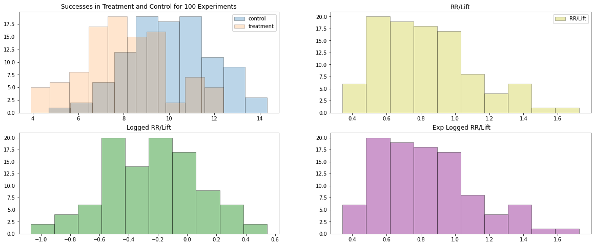
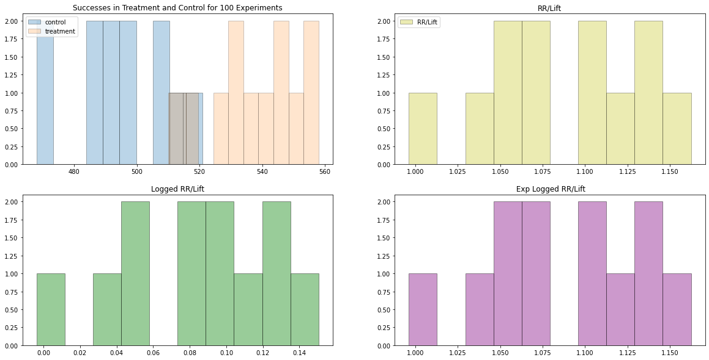
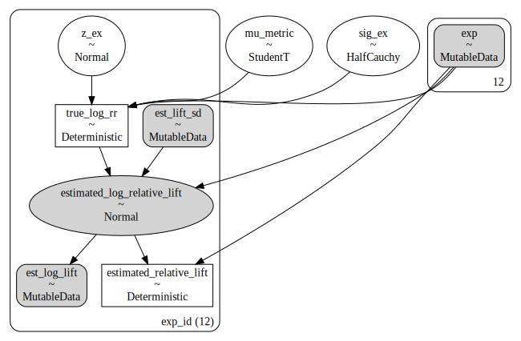
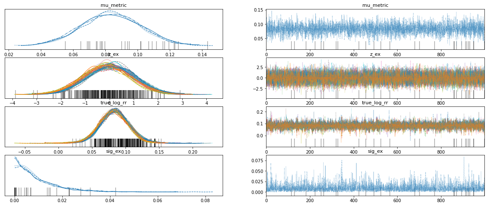
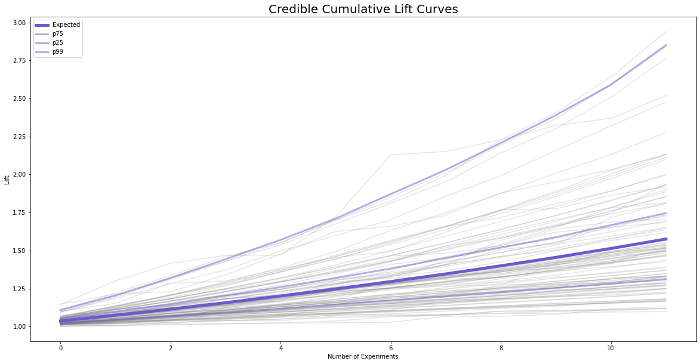
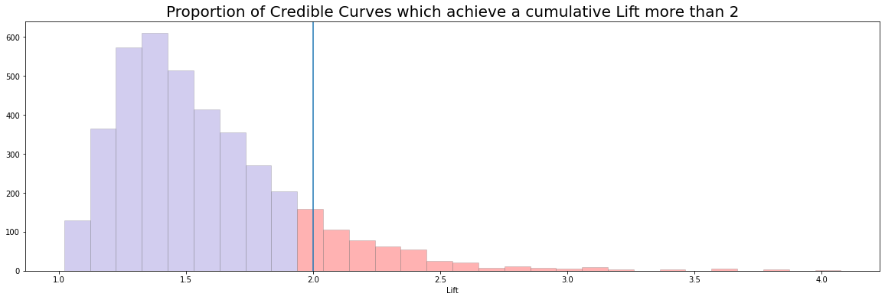
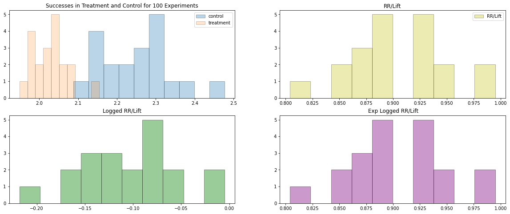
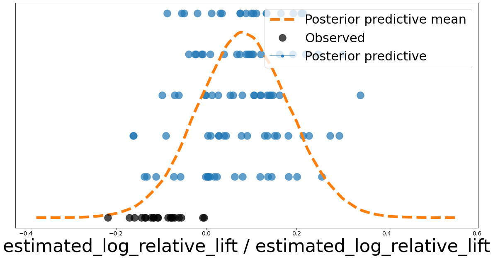
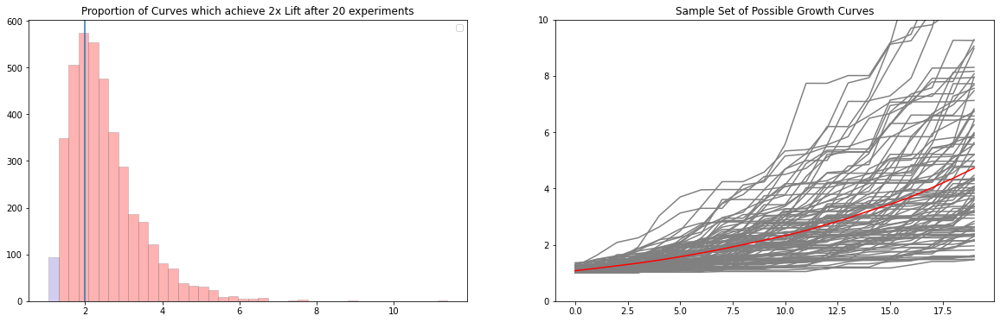

import pymc as pm
import bambi as bmb
import pandas as pd
import arviz as az
from bambi.plots import plot_cap
import matplotlib.pyplot as plt
import numpy as np
from scipy import stats: import pymc as pm
import bambi as bmb
import pandas as pd
import arviz as az
from bambi.plots import plot_cap
import matplotlib.pyplot as plt
import numpy as np
from scipy import stats: It’s useful fact that the Lift measurement of success can be more nicely modelled under a log transform. In this analysis we’ll follow the example in Demetri’s blog: https://dpananos.github.io/posts/2022-07-20-pooling-experiments/ and demonstrate how we can pool information across seperate experiments. In particular we’ll see why this type of modelling is apt for planning expected amount of cumulative gains over successive experiments. First observe how the Lift measurement can can be transformed to facilitate modelling.
np.random.seed(11)
fig, axs = plt.subplots(2, 2, figsize=(20, 8))
axs = axs.flatten()
counts_success_control = np.random.normal(10, 2, 100)
counts_success_treatment = np.random.normal(8, 2, 100)
axs[0].hist(counts_success_control, alpha=.3, label='control', edgecolor='black')
axs[0].hist(counts_success_treatment, alpha=0.2, label='treatment', edgecolor='black')
axs[0].legend()
axs[0].set_title("Successes in Treatment and Control for 100 Experiments")
rr = counts_success_treatment / counts_success_control
axs[1].hist(rr, alpha=0.3, label='RR/Lift', color='y', edgecolor='black')
axs[1].legend()
axs[1].set_title("RR/Lift")
axs[2].hist(np.log(rr), label='logged Lift', alpha=0.4, color='green', edgecolor='black')
axs[2].set_title("Logged RR/Lift")
axs[3].hist(np.exp(np.log(rr)), label='exponentiated Logged Lift', alpha=0.4, color='purple', edgecolor='black')
axs[3].set_title(" Exp Logged RR/Lift")Text(0.5, 1.0, ' Exp Logged RR/Lift')
The original data was modelled in the Stan probabilistic programming language. We’ll use this opportunity to translate the code into a pymc implementation.
In the scenario we have 12 seperate experiments with 50,000 units on either arm of the experiment. The were desigined to detect conversion in the arm of each trial. Only four of the experiments were successful in the sense that they showed a positive lift distinguishable from statistical noise under a 5% p-value threshold. Management wishes to achieve a total Lift of 2x over the next year. We want to determine how plausible that goal is given our track record so far.
df_pooling = pd.read_csv('pooling_data.csv')
df_pooling| Unnamed: 0 | n_per_group | y_txt | y_control | estimated_relative_lift | pvals | experiment | estimated_sd_relative_lift | estimated_log_relative_lift | |
|---|---|---|---|---|---|---|---|---|---|
| 0 | 1 | 50000 | 551 | 492 | 1.119919 | 0.035510 | 1 | 0.061704 | 0.113256 |
| 1 | 2 | 50000 | 510 | 490 | 1.040816 | 0.272968 | 2 | 0.062941 | 0.040005 |
| 2 | 3 | 50000 | 548 | 509 | 1.076621 | 0.119989 | 3 | 0.061233 | 0.073827 |
| 3 | 4 | 50000 | 537 | 511 | 1.050881 | 0.218777 | 4 | 0.061475 | 0.049629 |
| 4 | 5 | 50000 | 558 | 508 | 1.098425 | 0.065669 | 5 | 0.060997 | 0.093878 |
| 5 | 6 | 50000 | 542 | 489 | 1.108384 | 0.051774 | 6 | 0.062048 | 0.102904 |
| 6 | 7 | 50000 | 533 | 495 | 1.076768 | 0.123029 | 7 | 0.062100 | 0.073964 |
| 7 | 8 | 50000 | 544 | 468 | 1.162393 | 0.008903 | 8 | 0.062729 | 0.150481 |
| 8 | 9 | 50000 | 519 | 521 | 0.996161 | 0.512433 | 9 | 0.061694 | -0.003846 |
| 9 | 10 | 50000 | 532 | 469 | 1.134328 | 0.024447 | 10 | 0.063023 | 0.126041 |
| 10 | 11 | 50000 | 555 | 487 | 1.139630 | 0.018467 | 11 | 0.061767 | 0.130704 |
| 11 | 12 | 50000 | 525 | 497 | 1.056338 | 0.197962 | 12 | 0.062264 | 0.054808 |
fig, axs = plt.subplots(2, 2, figsize=(20, 10))
axs = axs.flatten()
axs[0].hist(df_pooling['y_control'], alpha=.3, label='control', edgecolor='black')
axs[0].hist(df_pooling['y_txt'], alpha=0.2, label='treatment', edgecolor='black')
axs[0].legend()
axs[0].set_title("Successes in Treatment and Control for 100 Experiments")
rr = df_pooling['y_txt'] / df_pooling['y_control']
axs[1].hist(rr, alpha=0.3, label='RR/Lift', color='y', edgecolor='black')
axs[1].legend()
axs[1].set_title("RR/Lift")
axs[2].hist(np.log(rr), label='logged Lift', alpha=0.4, color='green', edgecolor='black')
axs[2].set_title("Logged RR/Lift")
axs[3].hist(np.exp(np.log(rr)), label='exponentiated Logged Lift', alpha=0.4, color='purple', edgecolor='black')
axs[3].set_title(" Exp Logged RR/Lift")Text(0.5, 1.0, ' Exp Logged RR/Lift')
We want to pool the information across our 12 experiments and to do so we model them hierarchically as a draws from an overarching normal distribution. The assumptions means we have to set priors on the shape of our parameters. We allow the hierarchical Normal distribution be configured with a centre of mass drawn from the StudentT distribution ensuring that we can have heavy tails in the distribution to account for outlier experiments with massive returns. The code and structure of the model are displayed below:
with pm.Model() as model:
pass
model.add_coord('exp_id', list(range(12)), mutable=True)
with model:
exp_id = pm.MutableData("exp", list(range(12)))
# Priors for the Hierarchical Log Lift Distribution
mu_metric = pm.StudentT('mu_metric', mu=0, sigma=2.5, nu=3)
sig_ex = pm.HalfCauchy('sig_ex', 0.01)
# Priors for the Individual effects for each experiment
z_ex = pm.Normal('z_ex', 0, 1, dims='exp_id')
# Convenience wrappers for inputting fresh data
est_lift_sd = pm.MutableData('est_lift_sd', df_pooling['estimated_sd_relative_lift'], dims='exp_id')
est_log_lift = pm.MutableData('est_log_lift', df_pooling['estimated_log_relative_lift'], dims='exp_id')
## pooling the indivdual experiemnts, ensuring shrinkage to the overall mean
true_log_rr = pm.Deterministic('true_log_rr', mu_metric + z_ex[exp_id]*sig_ex, dims='exp_id')
## Likelihood model for Logged Lift using observed values
estimated_log_relative_lift = pm.Normal("estimated_log_relative_lift", mu=true_log_rr[exp_id], sigma=est_lift_sd[exp_id],
observed=est_log_lift, dims="exp_id")
estimated_relative_lift = pm.Deterministic('estimated_relative_lift', pm.math.exp(estimated_log_relative_lift[exp_id]), dims='exp_id')
pm.model_to_graphviz(model)
In the Bayesian workflow we sample both the priors, the prior predictive and posterior_predictive distributions. These allow us to assess model fit and the degree to which our model captures the observed data.
with model:
idata = pm.sample()
idata.extend(pm.sample_prior_predictive(samples=50, random_seed=1))
idata.extend(pm.sample_posterior_predictive(idata, var_names=["estimated_log_relative_lift", "mu_metric", "sig_ex"]))Auto-assigning NUTS sampler...
INFO:pymc:Auto-assigning NUTS sampler...
Initializing NUTS using jitter+adapt_diag...
INFO:pymc:Initializing NUTS using jitter+adapt_diag...
Multiprocess sampling (4 chains in 4 jobs)
INFO:pymc:Multiprocess sampling (4 chains in 4 jobs)
NUTS: [mu_metric, sig_ex, z_ex]
INFO:pymc:NUTS: [mu_metric, sig_ex, z_ex]Sampling 4 chains for 1_000 tune and 1_000 draw iterations (4_000 + 4_000 draws total) took 26 seconds.
INFO:pymc:Sampling 4 chains for 1_000 tune and 1_000 draw iterations (4_000 + 4_000 draws total) took 26 seconds.
There was 1 divergence after tuning. Increase `target_accept` or reparameterize.
ERROR:pymc:There was 1 divergence after tuning. Increase `target_accept` or reparameterize.
There were 6 divergences after tuning. Increase `target_accept` or reparameterize.
ERROR:pymc:There were 6 divergences after tuning. Increase `target_accept` or reparameterize.
There were 11 divergences after tuning. Increase `target_accept` or reparameterize.
ERROR:pymc:There were 11 divergences after tuning. Increase `target_accept` or reparameterize.
There were 3 divergences after tuning. Increase `target_accept` or reparameterize.
ERROR:pymc:There were 3 divergences after tuning. Increase `target_accept` or reparameterize.az.plot_trace(idata, var_names=['mu_metric', 'z_ex', 'true_log_rr', 'sig_ex'], figsize=(20, 8));
az.plot_ppc(idata, figsize=(20, 7), kind='scatter');
az.summary(idata)/Users/nathanielforde/Documents/Gitlab/async_research_club/.venv/lib/python3.9/site-packages/arviz/stats/diagnostics.py:586: RuntimeWarning: invalid value encountered in double_scalars
(between_chain_variance / within_chain_variance + num_samples - 1) / (num_samples)| mean | sd | hdi_3% | hdi_97% | mcse_mean | mcse_sd | ess_bulk | ess_tail | r_hat | |
|---|---|---|---|---|---|---|---|---|---|
| mu_metric | 0.083 | 0.018 | 0.050 | 0.118 | 0.000 | 0.000 | 4133.0 | 2445.0 | 1.0 |
| z_ex[0] | 0.041 | 0.987 | -1.774 | 1.968 | 0.014 | 0.017 | 4873.0 | 2808.0 | 1.0 |
| z_ex[1] | -0.088 | 0.995 | -2.017 | 1.718 | 0.014 | 0.017 | 5093.0 | 2906.0 | 1.0 |
| z_ex[2] | -0.037 | 0.971 | -1.795 | 1.796 | 0.014 | 0.016 | 4757.0 | 3008.0 | 1.0 |
| z_ex[3] | -0.079 | 1.011 | -1.973 | 1.788 | 0.014 | 0.017 | 4925.0 | 2573.0 | 1.0 |
| z_ex[4] | 0.046 | 0.974 | -1.860 | 1.815 | 0.013 | 0.016 | 5477.0 | 2826.0 | 1.0 |
| z_ex[5] | 0.041 | 0.994 | -1.815 | 1.892 | 0.015 | 0.019 | 4581.0 | 2276.0 | 1.0 |
| z_ex[6] | -0.003 | 0.965 | -1.727 | 1.879 | 0.015 | 0.016 | 4196.0 | 2759.0 | 1.0 |
| z_ex[7] | 0.165 | 0.987 | -1.713 | 1.959 | 0.015 | 0.017 | 4426.0 | 2569.0 | 1.0 |
| z_ex[8] | -0.183 | 0.992 | -2.046 | 1.649 | 0.014 | 0.016 | 4770.0 | 2848.0 | 1.0 |
| z_ex[9] | 0.077 | 0.998 | -1.664 | 2.037 | 0.014 | 0.017 | 4990.0 | 2714.0 | 1.0 |
| z_ex[10] | 0.115 | 0.998 | -1.752 | 1.988 | 0.014 | 0.018 | 5001.0 | 2612.0 | 1.0 |
| z_ex[11] | -0.082 | 0.997 | -1.909 | 1.840 | 0.015 | 0.018 | 4634.0 | 2564.0 | 1.0 |
| sig_ex | 0.010 | 0.010 | 0.000 | 0.027 | 0.000 | 0.000 | 2690.0 | 1933.0 | 1.0 |
| true_log_rr[0] | 0.084 | 0.021 | 0.046 | 0.126 | 0.000 | 0.000 | 4049.0 | 2457.0 | 1.0 |
| true_log_rr[1] | 0.082 | 0.021 | 0.042 | 0.121 | 0.000 | 0.000 | 3788.0 | 2655.0 | 1.0 |
| true_log_rr[2] | 0.083 | 0.022 | 0.042 | 0.123 | 0.000 | 0.000 | 4097.0 | 2861.0 | 1.0 |
| true_log_rr[3] | 0.082 | 0.022 | 0.040 | 0.121 | 0.000 | 0.000 | 3632.0 | 2416.0 | 1.0 |
| true_log_rr[4] | 0.084 | 0.021 | 0.044 | 0.123 | 0.000 | 0.000 | 4032.0 | 2419.0 | 1.0 |
| true_log_rr[5] | 0.084 | 0.022 | 0.042 | 0.124 | 0.000 | 0.000 | 4236.0 | 2668.0 | 1.0 |
| true_log_rr[6] | 0.083 | 0.021 | 0.045 | 0.123 | 0.000 | 0.000 | 3702.0 | 2731.0 | 1.0 |
| true_log_rr[7] | 0.086 | 0.022 | 0.043 | 0.126 | 0.000 | 0.000 | 4035.0 | 2712.0 | 1.0 |
| true_log_rr[8] | 0.080 | 0.022 | 0.040 | 0.121 | 0.000 | 0.000 | 3619.0 | 2592.0 | 1.0 |
| true_log_rr[9] | 0.085 | 0.022 | 0.042 | 0.123 | 0.000 | 0.000 | 3831.0 | 2801.0 | 1.0 |
| true_log_rr[10] | 0.085 | 0.022 | 0.045 | 0.124 | 0.000 | 0.000 | 3814.0 | 2450.0 | 1.0 |
| true_log_rr[11] | 0.082 | 0.022 | 0.043 | 0.124 | 0.000 | 0.000 | 3962.0 | 2829.0 | 1.0 |
| estimated_relative_lift[0] | 1.120 | 0.000 | 1.120 | 1.120 | 0.000 | 0.000 | 4000.0 | 4000.0 | NaN |
| estimated_relative_lift[1] | 1.041 | 0.000 | 1.041 | 1.041 | 0.000 | 0.000 | 4000.0 | 4000.0 | NaN |
| estimated_relative_lift[2] | 1.077 | 0.000 | 1.077 | 1.077 | 0.000 | 0.000 | 4000.0 | 4000.0 | NaN |
| estimated_relative_lift[3] | 1.051 | 0.000 | 1.051 | 1.051 | 0.000 | 0.000 | 4000.0 | 4000.0 | NaN |
| estimated_relative_lift[4] | 1.098 | 0.000 | 1.098 | 1.098 | 0.000 | 0.000 | 4000.0 | 4000.0 | NaN |
| estimated_relative_lift[5] | 1.108 | 0.000 | 1.108 | 1.108 | 0.000 | 0.000 | 4000.0 | 4000.0 | NaN |
| estimated_relative_lift[6] | 1.077 | 0.000 | 1.077 | 1.077 | 0.000 | 0.000 | 4000.0 | 4000.0 | NaN |
| estimated_relative_lift[7] | 1.162 | 0.000 | 1.162 | 1.162 | 0.000 | 0.000 | 4000.0 | 4000.0 | NaN |
| estimated_relative_lift[8] | 0.996 | 0.000 | 0.996 | 0.996 | 0.000 | 0.000 | 4000.0 | 4000.0 | NaN |
| estimated_relative_lift[9] | 1.134 | 0.000 | 1.134 | 1.134 | 0.000 | 0.000 | 4000.0 | 4000.0 | NaN |
| estimated_relative_lift[10] | 1.140 | 0.000 | 1.140 | 1.140 | 0.000 | 0.000 | 4000.0 | 4000.0 | NaN |
| estimated_relative_lift[11] | 1.056 | 0.000 | 1.056 | 1.056 | 0.000 | 0.000 | 4000.0 | 4000.0 | NaN |
The Stan implementation has the functionality to enable the calculation of generated quantities on the fly within a model run. We need to replicate that functionality outside of our model making use of the estimated posterior distributions on the model parameters. We calculate the effect size engendered by an observed difference in proportions of conversion across the experiments, then calculate whether the simulated was large enough that we had the power to detect it against a baseline of 1% conversion. The quantities are used to define the amount of detected lift in our posterior distribution. This in turn can be used to project the amount of cumulative lift we will see over 12 experiments.
idata.stack(sample=["chain", "draw"], inplace=True)generated_quanties = []
for i in range(12):
generated_data = pd.DataFrame({'mu_metric': idata['posterior']['mu_metric'].values,
'sig_ex': idata['posterior']['sig_ex'].values
}
)
generated_data['log_rr_over_the_year'] = generated_data.apply(lambda x: np.random.normal(x['mu_metric'], x['sig_ex'], 1)[0], axis=1)
generated_data['rr_over_the_year'] = np.exp(generated_data['log_rr_over_the_year'])
## Calculate effect size for proportions against base 0.01
generated_data['es'] = generated_data.apply(lambda x: 2*np.arcsin(np.sqrt(x['rr_over_the_year'] * 0.01)) - 2*np.arcsin(np.sqrt(0.01)), axis=1)
## Calculate power based on difference from baseline with known sample size
generated_data['power'] = generated_data.apply(lambda x: 1 - stats.norm.cdf( 1.644854 - x['es'] * np.sqrt(50_000/2), 0, 1), axis=1)
## Weight lift by our ability to detect given power in experiment
generated_data['detected_lift'] = generated_data['power']* np.log(generated_data['rr_over_the_year'])
generated_data['experiment'] = i
generated_data['draw'] = generated_data.index
generated_quanties.append(generated_data)
forecast_df = pd.concat(generated_quanties)
forecast_df| mu_metric | sig_ex | log_rr_over_the_year | rr_over_the_year | es | power | detected_lift | experiment | draw | |
|---|---|---|---|---|---|---|---|---|---|
| 0 | 0.053614 | 0.003751 | 0.054232 | 1.055729 | 0.005526 | 0.220312 | 0.011948 | 0 | 0 |
| 1 | 0.089769 | 0.006848 | 0.078595 | 1.081766 | 0.008058 | 0.355404 | 0.027933 | 0 | 1 |
| 2 | 0.082105 | 0.008848 | 0.075538 | 1.078464 | 0.007739 | 0.336777 | 0.025440 | 0 | 2 |
| 3 | 0.076757 | 0.031000 | 0.098424 | 1.103431 | 0.010142 | 0.483548 | 0.047593 | 0 | 3 |
| 4 | 0.076757 | 0.031000 | 0.081759 | 1.085194 | 0.008389 | 0.375086 | 0.030667 | 0 | 4 |
| ... | ... | ... | ... | ... | ... | ... | ... | ... | ... |
| 3995 | 0.102766 | 0.012876 | 0.118111 | 1.125369 | 0.012232 | 0.613782 | 0.072494 | 11 | 3995 |
| 3996 | 0.066032 | 0.000387 | 0.065700 | 1.067907 | 0.006714 | 0.279849 | 0.018386 | 11 | 3996 |
| 3997 | 0.062600 | 0.007694 | 0.067979 | 1.070343 | 0.006951 | 0.292589 | 0.019890 | 11 | 3997 |
| 3998 | 0.090900 | 0.005162 | 0.103968 | 1.109565 | 0.010729 | 0.520525 | 0.054118 | 11 | 3998 |
| 3999 | 0.064391 | 0.010588 | 0.065984 | 1.068209 | 0.006743 | 0.281419 | 0.018569 | 11 | 3999 |
48000 rows × 9 columns
We can now line up the draws for each of our experiments and calculate the cumulative lift by taking the cumulative sum and then exponentiating to return us to the raw Lift scale.
draws_per_experiment = forecast_df.pivot('experiment', 'draw', 'detected_lift')
## Probability of Independent events sum on the log scale
draws_per_experiment = np.exp(draws_per_experiment.cumsum()).T
draws_per_experiment| experiment | 0 | 1 | 2 | 3 | 4 | 5 | 6 | 7 | 8 | 9 | 10 | 11 |
|---|---|---|---|---|---|---|---|---|---|---|---|---|
| draw | ||||||||||||
| 0 | 1.108264 | 1.184080 | 1.270116 | 1.344759 | 1.382252 | 1.493910 | 1.574159 | 1.636984 | 1.770258 | 1.896812 | 2.051490 | 2.125217 |
| 1 | 1.111839 | 1.173511 | 1.255733 | 1.316744 | 1.336851 | 1.431039 | 1.513762 | 1.624544 | 1.733171 | 1.984078 | 2.259019 | 2.370773 |
| 2 | 1.019156 | 1.058173 | 1.080910 | 1.120521 | 1.163374 | 1.190512 | 1.231332 | 1.257548 | 1.287433 | 1.320996 | 1.347873 | 1.399662 |
| 3 | 1.027886 | 1.062590 | 1.088567 | 1.124628 | 1.149337 | 1.189305 | 1.218267 | 1.258150 | 1.290688 | 1.328989 | 1.368187 | 1.412470 |
| 4 | 1.022567 | 1.037980 | 1.046979 | 1.064810 | 1.079649 | 1.086973 | 1.094045 | 1.097738 | 1.104774 | 1.108017 | 1.125943 | 1.132601 |
| ... | ... | ... | ... | ... | ... | ... | ... | ... | ... | ... | ... | ... |
| 3995 | 1.022991 | 1.064212 | 1.091823 | 1.118289 | 1.166716 | 1.182341 | 1.208105 | 1.252252 | 1.310564 | 1.319768 | 1.351317 | 1.375962 |
| 3996 | 1.039176 | 1.084013 | 1.129208 | 1.178795 | 1.230675 | 1.283502 | 1.337933 | 1.395778 | 1.451701 | 1.512018 | 1.576763 | 1.643312 |
| 3997 | 1.022346 | 1.057272 | 1.118954 | 1.183094 | 1.205393 | 1.225715 | 1.343847 | 1.407721 | 1.506250 | 1.565272 | 1.670593 | 1.755775 |
| 3998 | 1.037186 | 1.077082 | 1.122035 | 1.166914 | 1.206876 | 1.252481 | 1.300103 | 1.352597 | 1.397989 | 1.453273 | 1.510253 | 1.565866 |
| 3999 | 1.026173 | 1.057943 | 1.072373 | 1.120320 | 1.155082 | 1.198584 | 1.220144 | 1.246629 | 1.275155 | 1.311698 | 1.351460 | 1.378449 |
4000 rows × 12 columns
Note how there are cumulative lift curves that go up and down due to the possibility of failed experiments. We plot here a a sample of 100 possible curves along with the key quantiles.
fig, ax = plt.subplots(figsize=(20, 10))
ax.plot(draws_per_experiment.sample(100).T, color='grey', alpha=0.2);
ax.plot(draws_per_experiment.mean(), color='slateblue', label='Expected', linewidth=5)
ax.plot(draws_per_experiment.quantile(0.75), color='slateblue', label='p75', alpha=0.5, linewidth=3)
ax.plot(draws_per_experiment.quantile(0.25), color='slateblue', label='p25', alpha=0.5, linewidth=3)
ax.plot(draws_per_experiment.quantile(0.99), color='slateblue', label='p99', alpha=0.5, linewidth=3)
ax.set_title("Credible Cumulative Lift Curves", fontsize=20)
ax.set_ylabel("Lift")
ax.set_xlabel("Number of Experiments")
ax.legend()<matplotlib.legend.Legend at 0x180b0c520>
We can now also ask how credible a target lift of 2x over the course of 12 experiments really is?
fig, ax = plt.subplots(figsize=(20, 6))
N, bins, patches = ax.hist(draws_per_experiment[11], color='slateblue', edgecolor='grey', alpha=0.3, bins=30);
ax.axvline(2)
for i in range(9, len(patches)):
patches[i].set_facecolor('red')
ax.set_title("Proportion of Credible Curves which achieve a cumulative Lift more than 2", fontsize=20)
ax.set_xlabel("Lift")Text(0.5, 0, 'Lift')
We can make use of PYMC’s mutable data input to feed in new experimental data and try and predict implied effects using the posterior predictive distribution. We will continue to assume that we have 50,000 observations per experiment on each arm. But now let’s assume we have 20 experiments, with a similar pattern of Lift observed on each of the experiments.
N = 20
control = np.random.gumbel(2.2, 0.07, N)
treatment = np.random.gumbel(2.0, 0.05, N)
sd = np.random.normal(0.1, 0.01, N)
fig, axs = plt.subplots(2, 2, figsize=(20, 8))
axs = axs.flatten()
axs[0].hist(control, alpha=.3, label='control', edgecolor='black')
axs[0].hist(treatment, alpha=0.2, label='treatment', edgecolor='black')
axs[0].legend()
axs[0].set_title("Successes in Treatment and Control for 100 Experiments")
rr = treatment / control
log_rr = np.log(rr)
axs[1].hist(rr, alpha=0.3, label='RR/Lift', color='y', edgecolor='black')
axs[1].legend()
axs[1].set_title("RR/Lift")
axs[2].hist(log_rr, label='logged Lift', alpha=0.4, color='green', edgecolor='black')
axs[2].set_title("Logged RR/Lift")
axs[3].hist(np.exp(log_rr), label='exponentiated Logged Lift', alpha=0.4, color='purple', edgecolor='black')
axs[3].set_title(" Exp Logged RR/Lift")Text(0.5, 1.0, ' Exp Logged RR/Lift')
Here we can pass in the new data to our old model and re-generate the posterior predictive distribution.
# Do the posterior predictions
coords = {'exp_id': list(range(N))}
with model:
pm.set_data({"est_log_lift": log_rr, 'exp':list(range(N)), 'est_lift_sd': sd}, coords=coords)
ppc = pm.sample_posterior_predictive(idata, var_names=["estimated_log_relative_lift"])az.plot_ppc(ppc, figsize=(20, 10), kind='scatter');
ppc.stack(sample=["chain", "draw"], inplace=True)
predicted = ppc['posterior_predictive']['estimated_log_relative_lift'].to_dataframe().reset_index()
predicted| exp_id | chain | draw | estimated_log_relative_lift | |
|---|---|---|---|---|
| 0 | 0 | 0 | 0 | 0.129563 |
| 1 | 0 | 0 | 1 | 0.160167 |
| 2 | 0 | 0 | 2 | 0.015636 |
| 3 | 0 | 0 | 3 | 0.131316 |
| 4 | 0 | 0 | 4 | 0.155715 |
| ... | ... | ... | ... | ... |
| 79995 | 19 | 3 | 995 | 0.047107 |
| 79996 | 19 | 3 | 996 | 0.152401 |
| 79997 | 19 | 3 | 997 | 0.257834 |
| 79998 | 19 | 3 | 998 | 0.037314 |
| 79999 | 19 | 3 | 999 | -0.037456 |
80000 rows × 4 columns
predicted['rr_over_the_year'] = np.exp(predicted['estimated_log_relative_lift'])
## Calculate effect size for proportions against base 0.01
predicted['es'] = predicted.apply(lambda x: 2*np.arcsin(np.sqrt(x['rr_over_the_year'] * 0.01)) - 2*np.arcsin(np.sqrt(0.01)), axis=1)
## Calculate power based on difference from baseline with known sample size
predicted['power'] = predicted.apply(lambda x: 1 - stats.norm.cdf( 1.644854 - x['es'] * np.sqrt(50_000/2), 0, 1), axis=1)
## Weight lift by our ability to detect given power in experiment
predicted['detected_lift'] = predicted['power']* np.log(predicted['rr_over_the_year'])
predicted| exp_id | chain | draw | estimated_log_relative_lift | rr_over_the_year | es | power | detected_lift | |
|---|---|---|---|---|---|---|---|---|
| 0 | 0 | 0 | 0 | 0.129563 | 1.138330 | 0.013457 | 0.685424 | 0.088805 |
| 1 | 0 | 0 | 1 | 0.160167 | 1.173706 | 0.016767 | 0.842840 | 0.134995 |
| 2 | 0 | 0 | 2 | 0.015636 | 1.015759 | 0.001578 | 0.081447 | 0.001273 |
| 3 | 0 | 0 | 3 | 0.131316 | 1.140329 | 0.013646 | 0.695916 | 0.091385 |
| 4 | 0 | 0 | 4 | 0.155715 | 1.168493 | 0.016282 | 0.823705 | 0.128263 |
| ... | ... | ... | ... | ... | ... | ... | ... | ... |
| 79995 | 19 | 3 | 995 | 0.047107 | 1.048235 | 0.004791 | 0.187461 | 0.008831 |
| 79996 | 19 | 3 | 996 | 0.152401 | 1.164627 | 0.015922 | 0.808573 | 0.123227 |
| 79997 | 19 | 3 | 997 | 0.257834 | 1.294124 | 0.027678 | 0.996847 | 0.257021 |
| 79998 | 19 | 3 | 998 | 0.037314 | 1.038019 | 0.003786 | 0.147719 | 0.005512 |
| 79999 | 19 | 3 | 999 | -0.037456 | 0.963237 | -0.003729 | 0.012726 | -0.000477 |
80000 rows × 8 columns
predicted_curves = predicted.pivot(['chain', 'draw'], 'exp_id', 'detected_lift')
predicted_curves| exp_id | 0 | 1 | 2 | 3 | 4 | 5 | 6 | 7 | 8 | 9 | 10 | 11 | 12 | 13 | 14 | 15 | 16 | 17 | 18 | 19 | |
|---|---|---|---|---|---|---|---|---|---|---|---|---|---|---|---|---|---|---|---|---|---|
| chain | draw | ||||||||||||||||||||
| 0 | 0 | 0.088805 | 0.001197 | -0.000484 | 0.171321 | 0.307768 | -0.000114 | -0.000358 | -0.000050 | 0.119042 | 0.035483 | 0.008818 | 0.017530 | 0.126463 | 0.044351 | 0.021847 | 0.077193 | 0.055479 | 8.898377e-03 | 0.010240 | 0.001336 |
| 1 | 0.134995 | -0.000085 | 0.169952 | -0.000517 | 0.005521 | 0.006376 | -0.000489 | 0.134169 | 0.245929 | 0.038492 | -0.000515 | 0.002976 | 0.209037 | 0.062656 | 0.002869 | 0.139614 | 0.254202 | 4.575356e-02 | 0.286258 | 0.206261 | |
| 2 | 0.001273 | 0.191886 | 0.001264 | 0.090177 | -0.000060 | 0.330653 | 0.202727 | -0.000368 | 0.015053 | 0.305181 | -0.000259 | 0.049178 | -0.000262 | 0.015266 | 0.090864 | 0.060138 | 0.008056 | 1.787840e-01 | 0.003004 | -0.000283 | |
| 3 | 0.091385 | -0.000165 | 0.175993 | 0.210623 | -0.000398 | 0.000092 | 0.008886 | 0.169622 | 0.016613 | -0.000175 | -0.000333 | -0.000151 | 0.069115 | 0.003197 | 0.009931 | 0.008144 | 0.069742 | 5.125832e-04 | 0.223892 | -0.000056 | |
| 4 | 0.128263 | -0.000264 | 0.029506 | 0.074044 | -0.000028 | 0.013448 | 0.034857 | 0.181062 | 0.059433 | 0.119991 | 0.022186 | 0.181830 | 0.078825 | 0.042061 | 0.229243 | 0.173755 | 0.131305 | -3.022104e-08 | 0.019529 | 0.023409 | |
| ... | ... | ... | ... | ... | ... | ... | ... | ... | ... | ... | ... | ... | ... | ... | ... | ... | ... | ... | ... | ... | ... |
| 3 | 995 | 0.010141 | 0.046869 | 0.261628 | 0.187072 | 0.207434 | 0.041217 | 0.029719 | 0.098765 | -0.000002 | 0.050363 | -0.000449 | 0.215972 | 0.084759 | 0.035756 | 0.187955 | 0.000416 | 0.005068 | -3.511800e-04 | 0.208030 | 0.008831 |
| 996 | 0.020431 | 0.113550 | -0.000424 | 0.009520 | 0.283799 | 0.010694 | -0.000157 | 0.030434 | 0.104618 | 0.032070 | 0.117800 | 0.152587 | -0.000257 | -0.000003 | -0.000008 | 0.029872 | 0.224894 | 2.599086e-01 | 0.092621 | 0.123227 | |
| 997 | 0.082644 | 0.004597 | 0.028806 | 0.001567 | 0.009130 | 0.000728 | 0.010956 | 0.001111 | 0.212021 | 0.240963 | 0.067241 | 0.182531 | 0.301767 | 0.221201 | 0.000654 | 0.001957 | 0.137934 | 2.372076e-01 | 0.014318 | 0.257021 | |
| 998 | -0.000116 | 0.085200 | -0.000517 | 0.005099 | 0.029492 | 0.040047 | -0.000026 | 0.002956 | 0.104428 | 0.082584 | 0.000486 | 0.001877 | 0.032360 | 0.001402 | 0.003078 | 0.001904 | -0.000390 | -1.231683e-04 | -0.000350 | 0.005512 | |
| 999 | 0.002641 | 0.138605 | 0.201605 | 0.103506 | 0.180542 | 0.034928 | 0.012054 | -0.000369 | 0.047570 | 0.086689 | 0.257165 | 0.102930 | 0.221825 | 0.178257 | 0.010981 | 0.324702 | 0.091735 | 2.999001e-02 | 0.200721 | -0.000477 |
4000 rows × 20 columns
fig, axs = plt.subplots(1, 2, figsize=(20, 6))
np.random.seed(19)
axs = axs.flatten()
N, bins, patches = axs[0].hist(np.exp(predicted_curves.cumsum(axis=1))[11], color='slateblue', edgecolor='grey', alpha=0.3, bins=40);
axs[0].axvline(2)
for i in range(1, len(patches)):
patches[i].set_facecolor('red')
ax.set_title("Proportion of Credible Curves which achieve a cumulative Lift more than 2", fontsize=20)
ax.set_xlabel("Lift")
axs[0].set_title("Proportion of Curves which achieve 2x Lift after 20 experiments")
axs[0].legend()
axs[1].plot(np.exp(predicted_curves.cumsum(axis=1)).sample(100).T, color='grey');
axs[1].plot(np.exp(predicted_curves.cumsum(axis=1)).mean(), color='red', label='Expected Growth curve');
axs[1].set_title("Sample Set of Possible Growth Curves")
axs[1].set_ylim(0, 10)WARNING:matplotlib.legend:No artists with labels found to put in legend. Note that artists whose label start with an underscore are ignored when legend() is called with no argument.(0.0, 10.0)